CHAPTER FIVE
GetRight
I’m sure that while surfing
through the net you must have come across a handsome picture of Tom Cruise. The one where he shows of his dimpled
smile as he offers you a 'Cocktail'. And surely you must have visited the music
sites and wanted to download the latest Savage Garden number. Or then fell
absolutely head over heels in love with Winnie the Pooh winking at you through
the computer screen. Wouldn’t you want to see the bare yellow belly of this
cute bear each time you switched on your computer? The easiest way to have your
favourite Hollywood star’s picture or the hit single from the latest rock band
in town stored on your computer is by downloading it from the net. But if life
was such a bed of roses then who would buy ointments to save themselves from
the thorn pricks? I mean the pharmacy needs a clientele too, doesn’t it? Let me
tell you what happened with me the first time I tried to download some pictures
of Dennis the Menace (I simply adore him and his cute naughty ways) from the
net.
After what seemed like a
million attempts I managed to get connected to the VSNL lines. With my luck
this was the day the servers decided to put up their best stubborn behaviour.
And I thought it was just the rain gods who were against me!! Each time I left
the house wearing my favourite pair of jeans it would rain leopards and tigers.
Not that I have anything against cats and dogs, but the change of expression
was just to let you know how wild the rains were that lashed down on me and my
Pepe jeans. Anyways, I finally managed to get hooked on to one of the
connection lines. Maybe it was my good deed of helping my dad copy-paste his
legal documents that did the trick of pleasing the server deities. But whatever
it was, it sure did not last long, coz this was not the end of my net troubles.
Infact, it was just the beginning! Inspite of perfectly entering in my user
name and password, VSNL took its own sweet time to verify my authenticity. By
the time I actually got logged on to the Internet, I had almost forgotten what
I was there for! And believe me, amnesia does not happen at the age of
seventeen!! It was a sheer case of 'test my patience and see how forgetful I
can get'. I myself have played this
game often with my
mother; got her totally
irritated so that she forgot how much money she had given me to buy a pair of
shoes! The unspent money conveniently went into my 'movie watching' fund. Well,
from the moment I got connected to the net, all the sites decided to take the
day off. Some Sunday picnic seemed to be on the cards, or should I say on the
'bytes' for them. An unnerving, hair tearing search finally lead to the cute
pictures of Dennis. So I quickly set out to whack them from the net. I watched
with all the patience I could muster, the rise in the percentage of file that
was downloading. From 10%…19%….37%…..to 63%.. then 86%…All was going
surprisingly very smoothly. Finally the gods were smiling at me!! The file
download had finally reached 91%… It was almost done. I was deciding where to
save it. Should it be my wallpaper or then my screen saver? It had reached 93%.
Now it was at 97% …a steady climb to
98%…soon to reach the triple figure mark… when the gods decided to shit on
me!!!! The connection broke off!!!!! I could not believe this was happening!!!
I knew Dennis was a mischievous lad, but he possibly could not make a 'menace'
of himself through the Internet, could he?? I must have crossed a black cat in
the morning or then probably Murphy wanted to make me the guinea pig for his
next law. Whatever the reason be, I was in the Reebok shoes of our Indian
batsmen who get bowled at 99 runs. I was left with no pictures, no wallpaper,
no screen saver; just 3 hours of sweat, blood, toil and effort washed down the
drain and not to forget, a huge telephone bill!! So before history repeats
itself, I decided to find a solution to my dilemma. And then I came across this
wonderful software that showed me how to 'get right'! The function of GetRight
is that it allows you to pick up from where you last left. Incase while
downloading pictures, songs, files, software or information from the net you
have to log off or get involuntarily disconnected, then fret not. GetRight
comes to your rescue. It does not let how much you already have downloaded go
waste. It allows you to resume your process of downloading. So, the next time
you log on to the net, you can pick up the strings of downloading from where
you last left them. A convenient way to save yourself from the frustrations of
an unwanted disconnect.
Type in www.getright.com in the address bar. You will be instantly taken to the GetRight site, where you can download this software so that all your further downloads will be a smooth sailing journey with no fear of any possible break of connection. Immediately click on the `Download Now` option and pray that for just this once the VSNL lines behave themselves!! You can’t challenge them as yet. First you need to have GetRight installed on your computer to care a damn when the Internet connection dumps you.
|
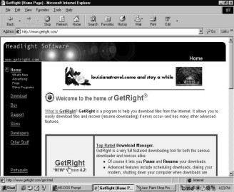 |
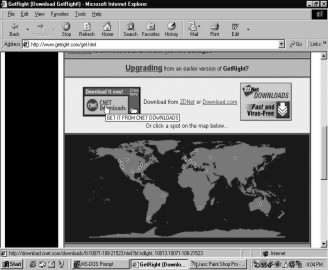 |
|
Screen 5. 1 |
Screen 5. 2 |
The `File Download` dialog box will appear. You have the choice of either running the program from its present position or then to saving it on your hard disk. Since you need GetRight each time you wish to extract something from the net, it would be advisable to save it on your hard disk.
|
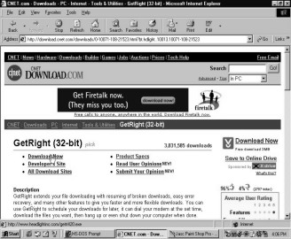 |
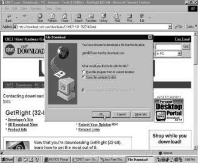 |
|
Screen 5. 3 |
Screen 5. 4 |
You need to decide where you want to save the file. Since the `C` drive is where you will 'see' first, let us store this program there. The file will automatically be labeled as getrt420.exe. Exe stands for 'executable'. Incase the file has .zip extension, then you will have to visit the site www.winzip.com website and download the winzip program to unzip your file. The 420 attached at the end of the file name is the version number of the program. Each time a new program is released, offering better features, the version number changes. But this 420 is also a signal to warn the Internet lines that two can play the mischief game. Our GetRight is as much of a char sau bees as the connection lines. It won’t get deterred by any number of disconnections when it is on a downloading mission.
|
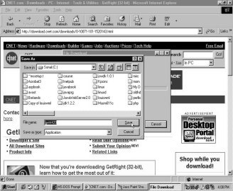 |
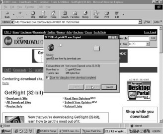 |
|
Screen 5. 5 |
Screen 5. 6 |
Select the option of closing the dialog box once the download is complete. Amen! The download was a success. Now no Internet service provider, be it MTNL, Mantra, VSNL or Satyam can challenge your downloading capabilities.
|
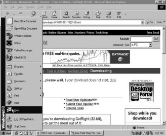 |
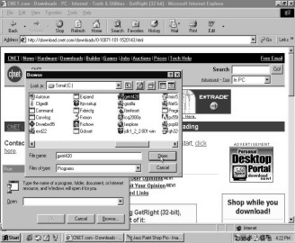 |
|
Screen 5. 7 |
Screen 5. 8 |
Click on the `Run` option to put the program to use. From the dialog box that appears, click on the `Browse` button and open the getrt420 file that you had saved in the `C` drive. Hit on the `OK` switch to proceed with running the program. The GetRight installation process begins. The first window gives you an introduction to the program. Simply click on the `Next` option.
|
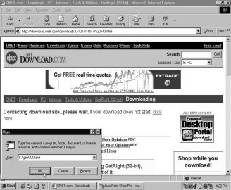 |
|
|
Screen 5. 9 |
Screen 5. 10 |
|
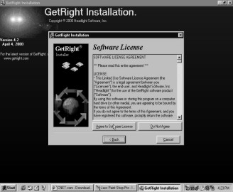 |
|
|
Screen 5. 11 |
Screen 5. 12 |
The software license terms and conditions window is what comes up next. Press the button `Agree to Software License` as you nod your head in agreement to their terms. The next window asks you to select the directory where GetRight should be installed. Click on the `Next` switch.
You are now ready to install the software. To commence the installation, click on the `Next` button. The small dialog box that appears will show you the percentage by percentage progress of the installation process. You can recite your two, five, seven, thirteen and twenty times table to quicken the installation procedure.
|
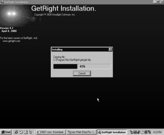 |
|
|
Screen 5. 13 |
Screen 5. 14 |
GetRight gives you the choice of selecting your GetRight icon. To include GetRight in the Program menu that appears when you click on the Start button, tick the first check box. To enable GetRight to begin work from the moment you start Windows, tick the second check box. To continue installing the software, click on the `Next` button.
|
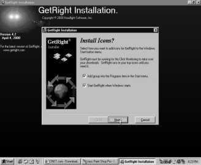 |
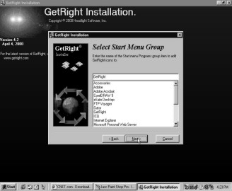 |
|
Screen 5. 15 |
Screen 5. 16 |
You can also choose the other items in the Programs menu, where the GetRight icon can appear. From the list select other items on the Programs menu where you would like to see the GetRight icon.
You have the option of installing a support system called `Attune` along with GetRight.
|
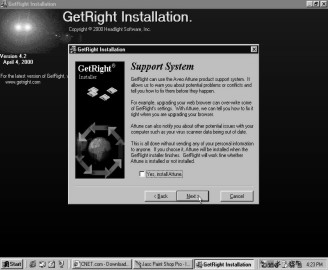 |
|
Screen 5. 17 |
This will warn you of the potential problems or conflicts such as viruses etc, and rectify them before they become a menace. I wonder why we can’t have an `Attune` in our daily lives too? Imagine all the hardships of life vanishing before they can even reach you. Never having to face cash crunches, heart breaks, squabbles with ma-in-law! Wow, now wouldn’t that be a 'picture perfect' world!! Then we could each give Jeniffer Aniston a run for her money!! Tick the box at the bottom of this window if you want to install `Attune`. Installing Attune will slow down your system, but it is definitely worth those few extra minutes. Press `Next` to proceed ahead.
There are two GetRights available. One which gives you just the a,b,c of the software and the second which gives takes you all the way to z. The Basic GetRight will hide some of the advanced functions of the program whereas the Full GetRight will display all the services. Me thinks that if you want something then take the best or don’t take it at all. So let us opt for the Full GetRight software.
|
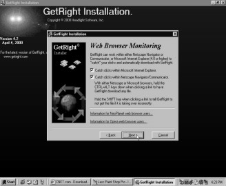 |
|
|
Screen 5. 18 |
Screen 5. 19 |
GetRight works with Netscape Navigator or Communicator and Microsoft Internet Explorer. To automatically capture clicks with GetRight when you log on to any of these Internet browsers, tick the two boxes.
The next window talks about the GetRight configuration. Move on to the next clip by selecting the `Next` button.
|
|
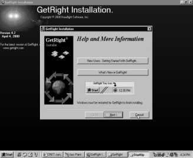 |
|
Screen 5. 20 |
Screen 5. 21 |

Cancel the window which insists on giving you more information on GetRight. Once the installation has been completed you will get a success window. Simply click on the `Finish` button. Now you can download no matter how many pictures, songs, files or programs from the net without a worry in the world about disconnection.
|
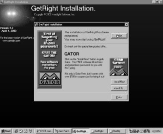 |
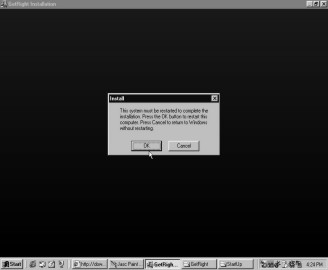 |
|
Screen 5. 22 |
Screen 5. 23 |
To complete the installation process you need to restart the computer. If not, then you will have to start a fresh copy of your Internet browser. Click on the `OK` button to follow this advice. And voila, GetRight is on your computer! Have a look at the tiny wheel-like icon on your task bar. The wheel of download that will never tire from rotating!
Now once you have installed GetRight you need to make sure it works. Let us download a program that requires a great deal of time so that even if you get disconnected, it don’t matter no more. Me thinks you should download ICQ, a chat program, which is one of the most popular chat channels around . Type in www.icq.com in the address bar.
|
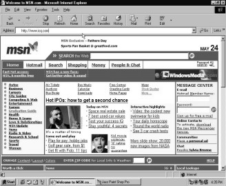 |
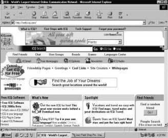 |
|
Screen 5. 24 |
Screen 5. 25 |
The ICQ website welcomes you. When you click on `Get ICQ for Free`, you will be transported to a new page that lists all the sites from where you can download this product. Select CNET to download the ICQ software.
|
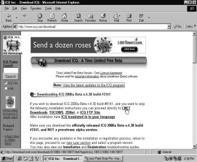 |
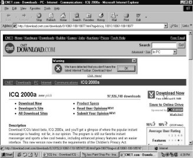 |
|
Screen 5. 26 |
Screen 5. 27 |
You will be taken to the CNET page. When you click on `Download Now` the process of downloading will begin. GetRight will now get into action and a different downloading box will appear.
To save this program on the hard disk, select the `C` drive and it will automatically be called icq2000a.
|
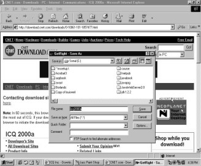 |
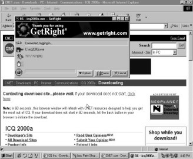 |
|
Screen 5. 28 |
Screen 5. 29 |
A dialog box appears that says `connected logging in`, while the next box proclaims that it is `connected` and the file transfer is set up.
|
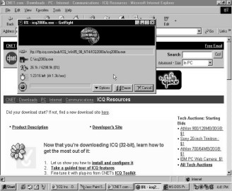 |
|
|
Screen 5. 30 |
Screen 5. 31 |
Notice that the image has now changed and it displays an address. The difference between this address and addresses like www.yahoo.com is that here the address starts with ftp whereas in yahoo it begins with http. The floppy disk indicates the disk where the file is being downloaded. The K% is how much of the file has been downloaded. The clock ticking away represents the time it is going to take to complete the download. The figure in brackets denotes the speed at which the file is being transferred.
If you need to pause the download, simply click on that button. This will halt the download process and a mere click on the `Resume` button will recommence the process.
|
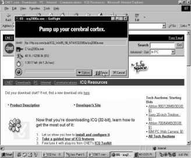 |
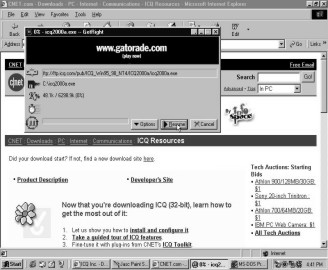 |
|
Screen 5. 32 |
Screen 5. 33 |
When you click on the `Resume` button, a message will be flashed saying that the download has been `Resumed 1 times`. Incase you pause it and resume it once again, then the message will display, `Resumed 2 times`. There are some websites, however, that do not support the Resume option. In such cases, a message will be displayed, stating `This site does not support resuming`. So if your connection line dumps you, then you have no choice but to start downloading from scratch.
|
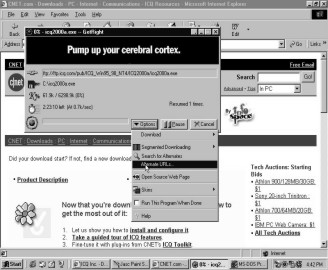 |
|
|
Screen 5. 34 |
Screen 5. 35 |
In your GetRight dialog box, click on the `Options` switch and a list of choices will loom up. Select `Alternate URL’s`. These URL’s are different sites from where the same file can be downloaded. A closer look will make you realize that this file can be downloaded from the ICQ site only.
|
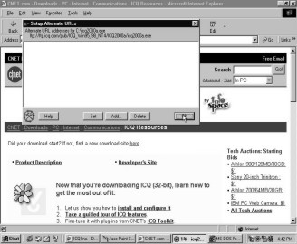 |
|
|
Screen 5. 36 |
Screen 5. 37 |
Incase you get disconnected, which is very much possible (courtesy the ISP lines or then your friend who is desperately trying to call you), fret not. GetRight will enable you to continue the download when you reconnect to the Internet. Say `Yes` to the message that asks you if you wish to download the file later. This will allow GetRight to store the details of the current download and pick up the threads from where you last left them.
|
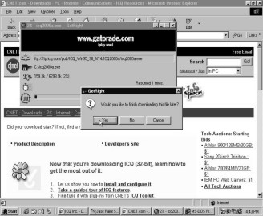 |
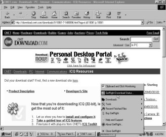 |
|
Screen 5. 38 |
Screen 5. 39 |
To restart GetRight, all you need to do is click on the wheel icon on your task bar. Right click on this symbol and choose the `GetRight Download Status`.
A new screen will be displayed showing you the downloads that are yet pending. It shows you that icq2000a is yet to be completely downloaded. The screen shows the total file size and the progress of the download, i.e. how much percentage of the file has already been downloaded.
|
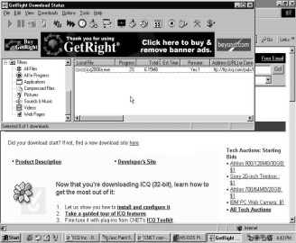 |
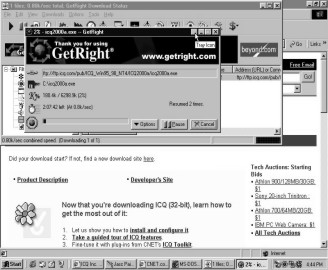 |
|
Screen 5. 40 |
Screen 5. 41 |
Double click on the file and GetRight will set to work, picking off from where you had last abandoned the download. Minimize the GetRight window to its original wheel icon and close the status window.
|
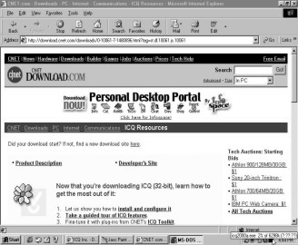 |
|
Screen 5. 42 |
The icon on the task bar tells you how much of the file has been received. So each time you want to know the progress of the download, simply place the mouse pointer on the wheel. It will instantly show you the percentage of the file that has been successfully downloaded on your hard disk. Once the download has been completed GetRight will obediently go off to sleep till you awaken it for the next download. Right click on the wheel and you will see an option ‘Close GetRight’.Selecting this option will disable GetRight from trapping any further clicks. You can then restart it by moving onto Start-Programs-GetRight and then selecting GetRight Tray Icon.